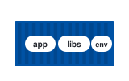
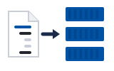
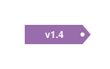
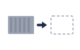

01Why containers · ហេតុអ្វីកុងតឺន័រworks
On my laptop it works, but on the server it breaks.
នៅលើ laptop វាដំណើរការ ប៉ុន្តែនៅលើ server វាខូច។
កុងតឺន័រ និង image · មុននឹងរៀន Kubernetes ត្រូវយល់ពីកុងតឺន័រជាមុនសិន
កុងតឺន័រវេចខ្ចប់កម្មវិធីរួមជាមួយអ្វីៗដែលវាត្រូវការ ដូច្នេះវាដំណើរការដូចគ្នានៅគ្រប់ម៉ាស៊ីន។

Same everywhereដូចគ្នាគ្រប់កន្លែង
Many from oneimage មួយ កុងតឺន័រច្រើនតាមលំដាប់៖ បញ្ហា → image → សាងសង់ និង push → ដំណើរការ។
Space listen · ← → move · K show text
On my laptop it works, but on the server it breaks.
នៅលើ laptop វាដំណើរការ ប៉ុន្តែនៅលើ server វាខូច។
A container brings its own libraries, so it runs the same everywhere.
កុងតឺន័រ យក library ផ្ទាល់ខ្លួនមកជាមួយ ដូច្នេះវាដំណើរការដូចគ្នាគ្រប់ទីកន្លែង។
An image is a read-only template for a container.
Image គឺជាគំរូដែលអានបានតែប៉ុណ្ណោះ សម្រាប់បង្កើតកុងតឺន័រ។
An image is built in layers, one on top of another.
Image ត្រូវបានសាងសង់ជាស្រទាប់ៗ ដាក់ពីលើគ្នា។
A Dockerfile lists the steps to build the image.
Dockerfile រាយបញ្ជីជំហាន ដើម្បីសាងសង់ image។

We give each image a tag, like a version number.
យើងដាក់ tag ឲ្យ image នីមួយៗ ដូចលេខកំណែ។
We push the image to a registry, so servers can pull it.
យើង push image ទៅកាន់ registry ដើម្បីឲ្យ server អាច pull វាបាន។
From one image, we can run many containers.
ពី image មួយ យើងអាចដំណើរការកុងតឺន័របានច្រើន។

When a container stops, its changes are lost.
ពេលកុងតឺន័រឈប់ ការផ្លាស់ប្តូរនៅខាងក្នុងនឹងបាត់។
No. An image is like a class, and a container is like an object made from it.
ទេ។ Image ដូចជា class ហើយកុងតឺន័រ ដូចជា object ដែលបង្កើតចេញពីវា។
Image មិនដំណើរការទេ។ កុងតឺន័រ គឺ image ដែលកំពុងដំណើរការ។
Not really. Containers share the host kernel, so they start in seconds.
មិនមែនទេ។ កុងតឺន័រប្រើ kernel រួមគ្នាជាមួយម៉ាស៊ីន ដូច្នេះវាចាប់ផ្តើមក្នុងប៉ុន្មានវិនាទី។
VM មាន OS ពេញលេញផ្ទាល់ខ្លួន។ កុងតឺន័រស្រាលជាងច្រើន។
In a private registry on GitHub.확인 필요 · checkcheck
នៅក្នុង registry ឯកជនមួយ លើ GitHub។
We use the Git commit hash, not latest.
យើងប្រើ Git commit hash មិនមែន latest ទេ។
It has too many layers. Let's use a smaller base image.
វាមានស្រទាប់ច្រើនពេក។ តោះប្រើ base image តូចជាងនេះ។
Tap a word's play button to hear it. Hide one side, then recall it before you tap to check.
On my laptop it works, but on the server it breaks. A container brings its own libraries, so it runs the same everywhere.
នៅលើ laptop វាដំណើរការ ប៉ុន្តែនៅលើ server វាខូច។ កុងតឺន័រ យក library ផ្ទាល់ខ្លួនមកជាមួយ ដូច្នេះវាដំណើរការដូចគ្នាគ្រប់ទីកន្លែង។
An image is a read-only template for a container. An image is built in layers, one on top of another.
Image គឺជាគំរូដែលអានបានតែប៉ុណ្ណោះ សម្រាប់បង្កើតកុងតឺន័រ។ Image ត្រូវបានសាងសង់ជាស្រទាប់ៗ ដាក់ពីលើគ្នា។
A Dockerfile lists the steps to build the image. We give each image a tag, like a version number. We push the image to a registry, so servers can pull it.
Dockerfile រាយបញ្ជីជំហាន ដើម្បីសាងសង់ image។ យើងដាក់ tag ឲ្យ image នីមួយៗ ដូចលេខកំណែ។ យើង push image ទៅកាន់ registry ដើម្បីឲ្យ server អាច pull វាបាន។
From one image, we can run many containers. When a container stops, its changes are lost.
ពី image មួយ យើងអាចដំណើរការកុងតឺន័របានច្រើន។ ពេលកុងតឺន័រឈប់ ការផ្លាស់ប្តូរនៅខាងក្នុងនឹងបាត់។
Q. Is an image the same as a container?
Q. Image និងកុងតឺន័រ ដូចគ្នាទេ?
A. No. An image is like a class, and a container is like an object made from it.
A. ទេ។ Image ដូចជា class ហើយកុងតឺន័រ ដូចជា object ដែលបង្កើតចេញពីវា។
Q. Is a container a small virtual machine?
Q. កុងតឺន័រ គឺជា virtual machine តូចមួយមែនទេ?
A. Not really. Containers share the host kernel, so they start in seconds.
A. មិនមែនទេ។ កុងតឺន័រប្រើ kernel រួមគ្នាជាមួយម៉ាស៊ីន ដូច្នេះវាចាប់ផ្តើមក្នុងប៉ុន្មានវិនាទី។
Q. Where do you store your images?
Q. អ្នករក្សាទុក image នៅឯណា?
A. In a private registry on GitHub.
A. នៅក្នុង registry ឯកជនមួយ លើ GitHub។
Q. What tag do you use?
Q. អ្នកប្រើ tag អ្វី?
A. We use the Git commit hash, not latest.
A. យើងប្រើ Git commit hash មិនមែន latest ទេ។
Q. Why is the image so big?
Q. ហេតុអ្វី image ធំម្លេះ?
A. It has too many layers. Let's use a smaller base image.
A. វាមានស្រទាប់ច្រើនពេក។ តោះប្រើ base image តូចជាងនេះ។
Can you walk me through the Dockerfile?
អាចពន្យល់ Dockerfile ម្តងមួយជំហានបានទេ?
Which version is running now?
ឥឡូវនេះ កំណែមួយណាកំពុងដំណើរការ?
Say it in your head first, then tap the box to check.